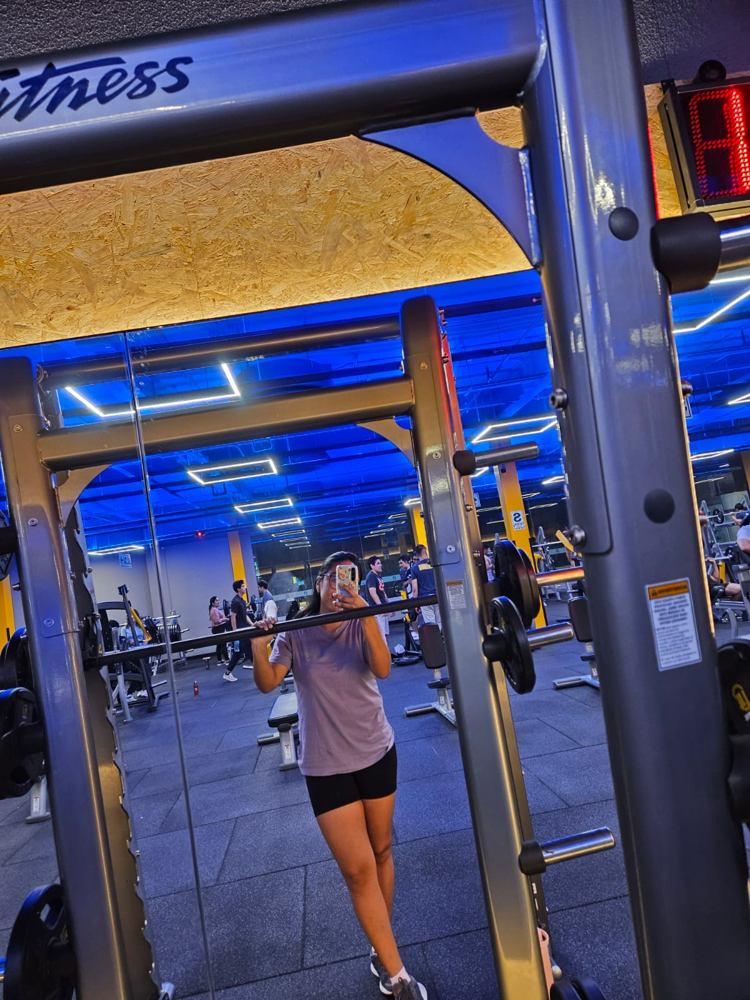

Backend Developer • Bases de Datos • Cloud
Hola, soy Valeria Querebalú
Me gusta descubrir cómo funcionan las cosas, cuestionar lo establecido y entender el porqué detrás de cada solución. Soy de esas personas que, cuando algo despierta su curiosidad, quiere investigar un poquito más.
Me interesa la arquitectura de software, la integridad de datos y la seguridad en el desarrollo.
Soy bachiller en Ingeniería de Sistemas y tengo especial interés en el desarrollo backend, las bases e ingeniería de datos, la automatización y las tecnologías cloud. Disfruto transformar ideas y necesidades en soluciones funcionales, aprender nuevas herramientas y enfrentar desafíos que me permitan crecer como profesional.
Me considero una persona responsable, empática, sociable y bastante intensa cuando algo me apasiona. Actualmente, uno de mis mayores aprendizajes es convertir esa curiosidad en proyectos concretos: empezar, construir y resolver problemas.
Stack Tecnológico
Bases de Datos & Data Engineering
Cloud & Herramientas
Proyectos & Arquitectura
Soluciones orientadas a integridad de datos, seguridad y escalabilidad.
Experiencia & Trayectoria
Mi recorrido profesional construyendo soluciones backend, arquitectura de datos y automatización empresarial.
+90%
Optimización en tiempos de procesamiento ETL mediante Clean Architecture.
Junio 2026 – Actualidad
Asistente de Desarrollo de Software y Automatización
Complejo Agroindustrial BetaDesarrollo de soluciones backend y módulos de seguridad con Java, Python y APIs REST (Supabase/PostgREST), aplicando Clean Architecture y pipelines ETL que redujeron tiempos operativos en más de un 90%. Diseño de dashboards de métricas y KPIs en Streamlit.
Agosto 2025 – Marzo 2026
Analista de Desarrollo de Software
Préstamos del NorteDesarrollo de módulos core en PHP 8 bajo arquitecturas limpias y diseño de bases de datos en MySQL optimizadas para grandes volúmenes de información. Automatización de flujos de inventarios, implementación de mapas de calor para monitoreo de red y coordinación de despliegues críticos garantizando continuidad operativa 24/7.
Julio 2024 – Julio 2025
Desarrolladora Full Stack Jr
Innovahtec SolutionsImplementación y consumo de APIs REST con Django y Laravel, gestión de persistencia relacional con Eloquent ORM y despliegue de entornos contenerizados con Docker. Desarrollo de módulos empresariales en Java (Android/SQLite y Swing con JasperReports) e interfaces dinámicas con Vue 3 dentro de equipos multidisciplinarios.
Certificaciones
AZ-900
Microsoft Certified: Azure Fundamentals
Microsoft • Fundamentos de servicios cloud, seguridad, gobierno y arquitectura en Azure.
Ver credencial ↗Beyond the Code
Te cuento un poco más de mi vida fuera del código.
Algunos acontecimientos importantes en mi trayectoria profesional.
Graduación
El cierre de una etapa de mucho esfuerzo y el inicio oficial de mi carrera en ingeniería y tecnología.

Equipo de trabajo InnovaHtec
Construyendo soluciones reales junto a equipos multidisciplinarios y aprendiendo de cada reto.

Impacto Real Beta
Ver cómo la automatización y los datos transforman procesos operativos en el día a día.
Mis libros
Siempre encuentro espacio para la lectura, me entretiene mucho.

Movimiento
El ejercicio es parte de mi rutina. Trato de mantenerme activa y aprendiendo nuevos deportes.
Explorar
Viajar, conocer nuevos lugares y salir de la rutina. Hay mucho mundo por descubrir.
Contacto
Buscando oportunidades en desarrollo Backend, Ingeniería de Datos y Desarrollo Web.